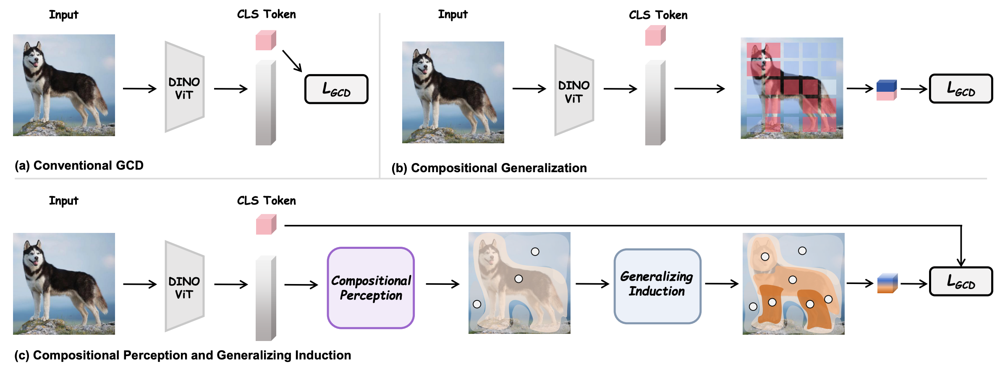
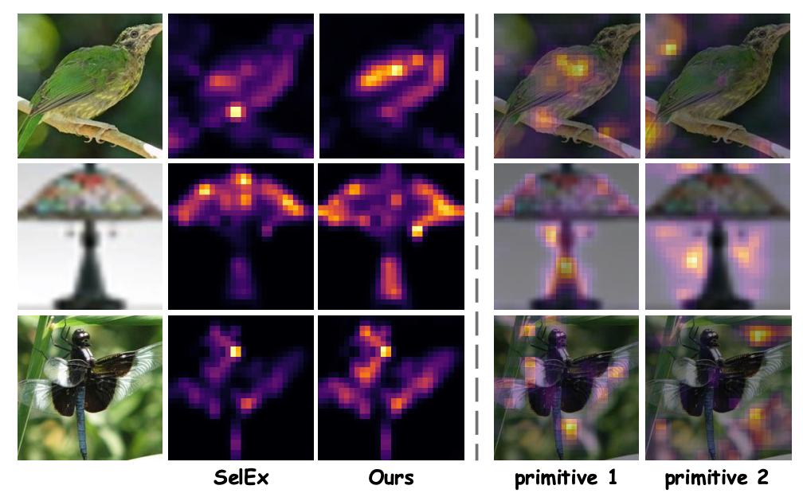
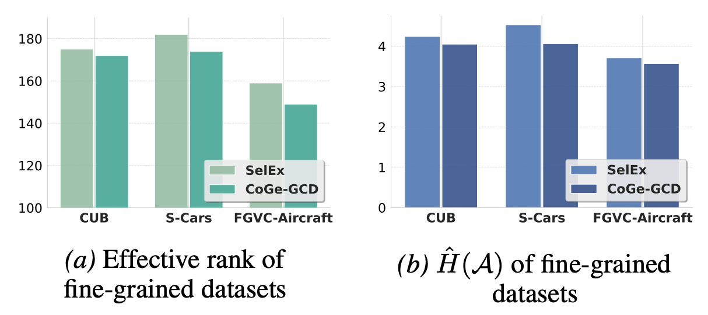
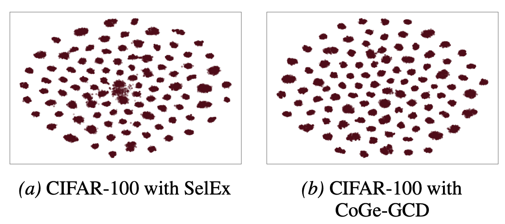
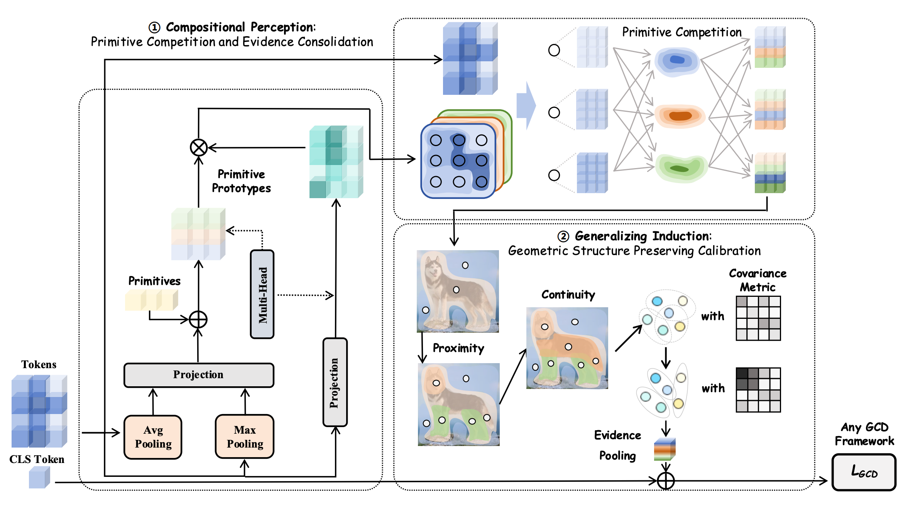
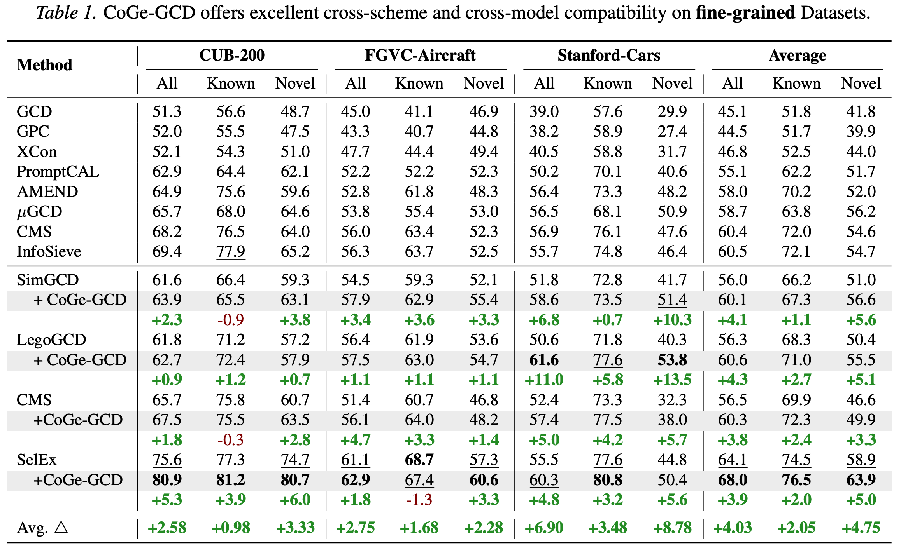
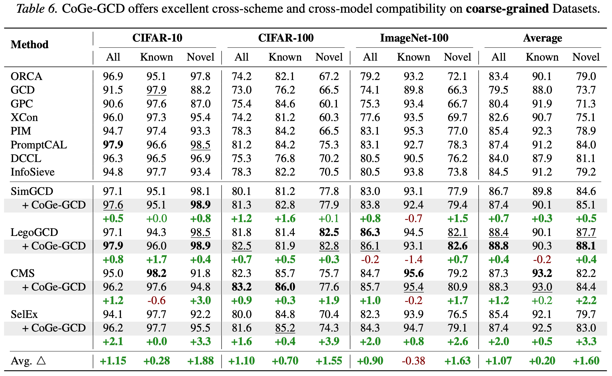

01
Latent compositional manifold
X = A∗P∗ + E
Observed patch features are generated from a finite primitive basis plus isotropic noise, with M ≪ min(N, D).
Reframing Generalized Category Discovery with Compositional Generalization
The University of Hong Kong · Xiamen University · Shenzhen University
Generalized Category Discovery must recognize both known and novel categories from a mixture of labeled and unlabeled images. CoGe-GCD asks a deeper question: can a model discover a new category by reusing the visual primitives it already knows, and by reasoning over their new composition?
CoGe-GCD reframes GCD as a compositional generalization problem. It first turns patch tokens into competing, image-conditioned primitives, then preserves their spatial and relational geometry before the original GCD head makes a known/novel decision. The backbone, objective, clustering protocol and head remain unchanged.
💡 Core insight
In an open world, a category can be unfamiliar while its parts, attributes and relations are familiar. A discovery model therefore needs an explicit chain from perceptual organization to inductive extrapolation.
Holistic embeddings can hide the intermediate evidence that explains why a novel category is plausible. CoGe-GCD makes that evidence explicit before clustering.
A small, image-conditioned primitive vocabulary competes for token support. Its soft memberships create a higher-order token–primitive geometry.
CoGe-GCD is an inductive-bias module between backbone and projection head. Existing losses, optimizers, heads and clustering remain reusable.

🧮 Core formulation
The equations below mirror the paper's two-stage design: build a compositional representation, then preserve the geometry needed for induction.
Observed patch features are generated from a finite primitive basis plus isotropic noise, with M ≪ min(N, D).
Each primitive receives unit probability mass over tokens, encouraging specialization instead of collapse.
Information flows token → primitive → token, amplifying coherent groups and attenuating noisy associations before the GCD head.
Proximity and continuity are injected while column-stochastic semantics are preserved, producing a structured substrate for generalizing induction.
🔎 What the model discovers
Across samples, a fixed primitive index tends to attend to semantically corresponding regions. The model is no longer forced to explain every image with one holistic token.




📊 Empirical evidence
CoGe-GCD is evaluated on CUB-200, Stanford Cars, FGVC-Aircraft, CIFAR-10, CIFAR-100 and ImageNet-100, while retaining the original GCD protocol.


🔌 Built to travel
The module is designed as a lightweight insertion point between a ViT-style backbone and the existing projection/head. It can be paired with SimGCD, LegoGCD, CMS, SelEx or another compatible GCD pipeline.
from models.compositional import CompositionalPerception
coge = CompositionalPerception(embed_dim=768, num_primitives=16, num_heads=8)
refined_tokens = coge(patch_tokens) # [batch, num_patches, embed_dim]
# feed the refined representation to your existing GCD projection/headThe central separation—organize evidence first, infer novelty second—is intentionally broader than one benchmark. It offers a reusable interface for continual discovery, domain-shifted discovery, open-world recognition and other tasks whose category inventory evolves over time. We hope researchers will try the interface with new backbones and tasks, and share feedback, failure cases and extensions.
Reference
If CoGe-GCD is useful for your research, please cite:
@inproceedings{tangcoge,
title={CoGe-GCD: Reframing Generalized Category Discovery with Compositional Generalization},
author={Tang, Luyao and Zheng, Jiewei and Huang, Kunze and Chen, Chaoqi and Huang, Yue and Chen, Cheng},
booktitle={Forty-third International Conference on Machine Learning}
}